Activities + Workshops
All
2A
2B
2C
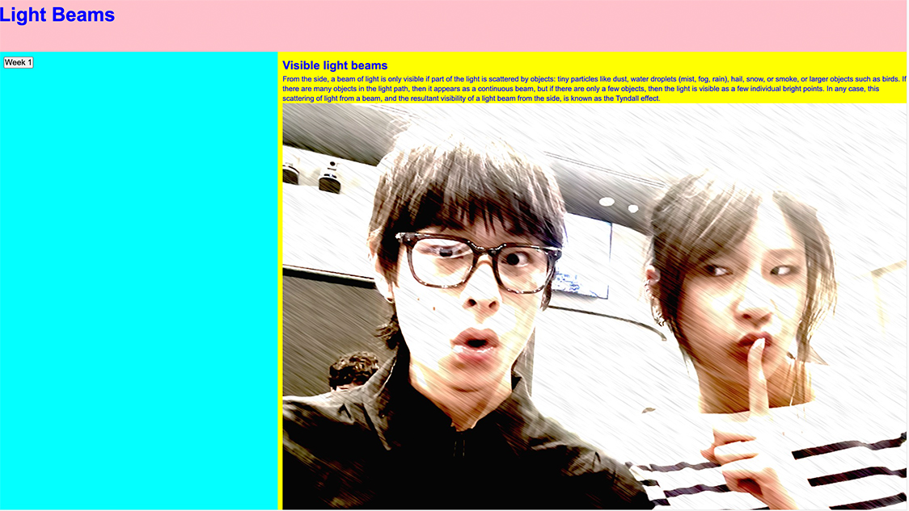
Basic HTML & CSS
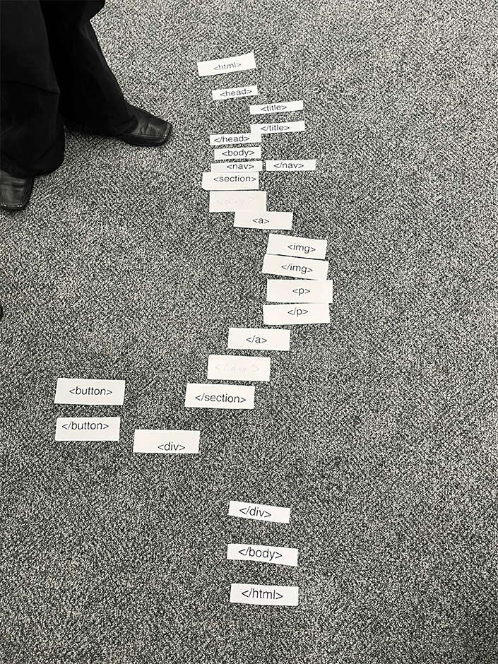
HTML Chase
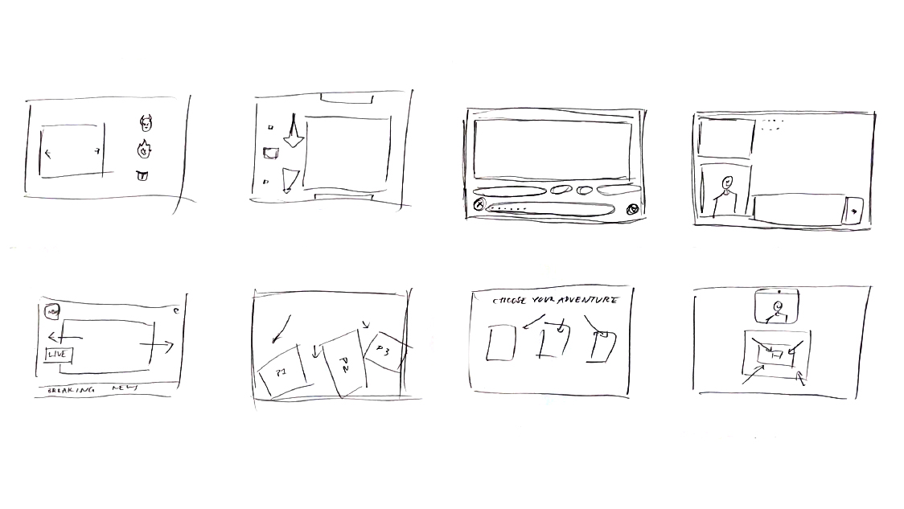
Crazy 8s
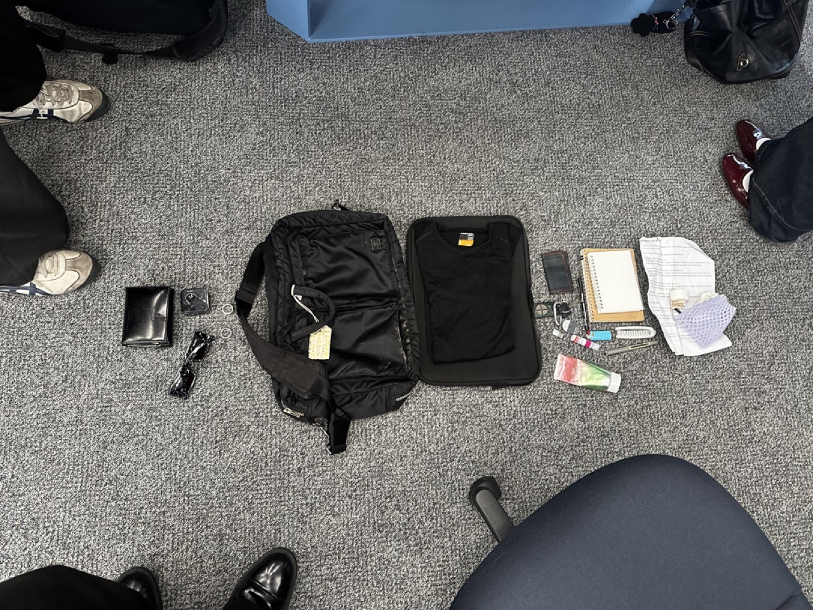
What's in my bag
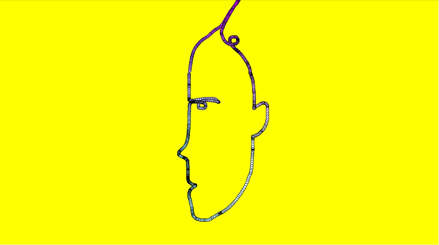
Rainbow dot-following cursor
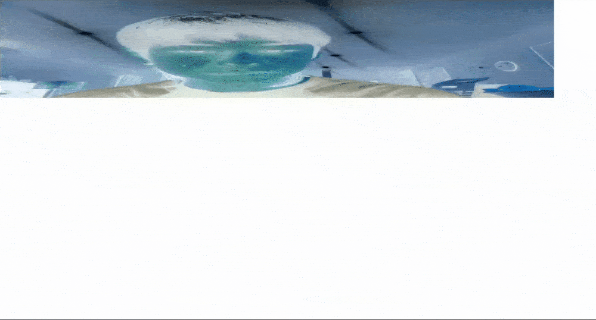
INVERT + STRETCH
Mouse Tracked Camera
Opposite square and circle
Flickering Inverted Camera
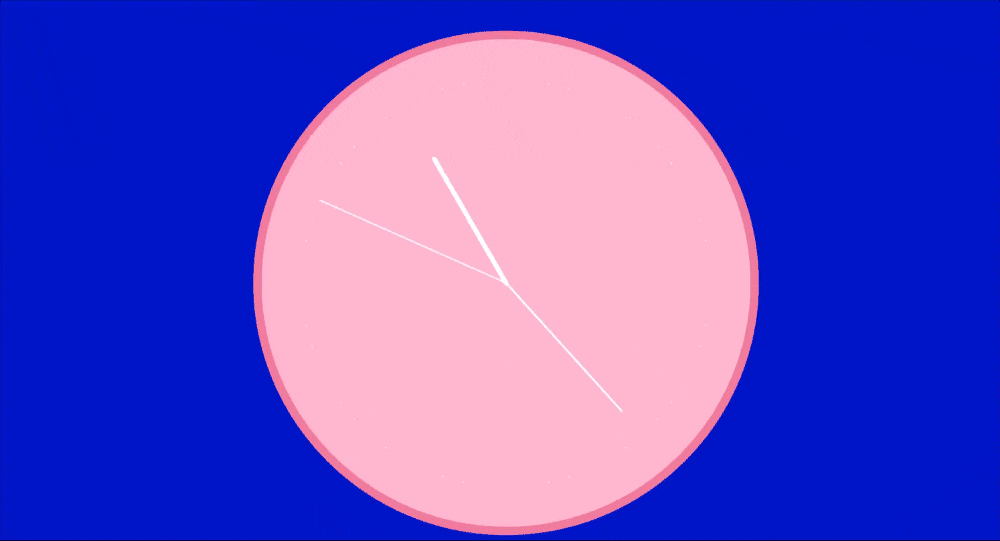
Live Data Clock
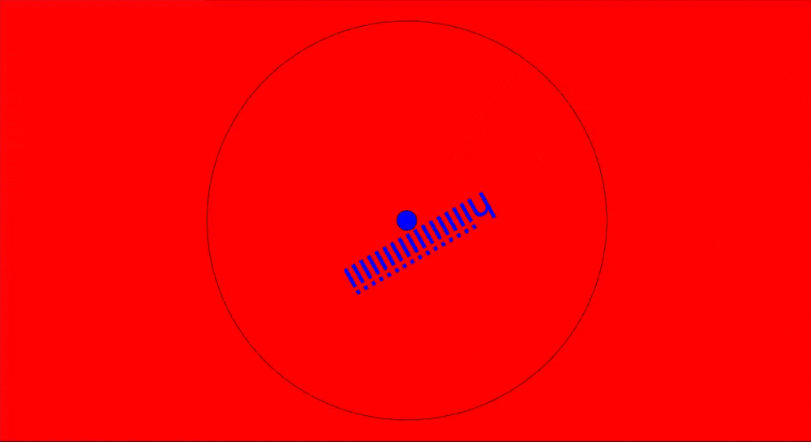
Mouse Position Spinner
Kaleidescope Draw
Music-activated motion
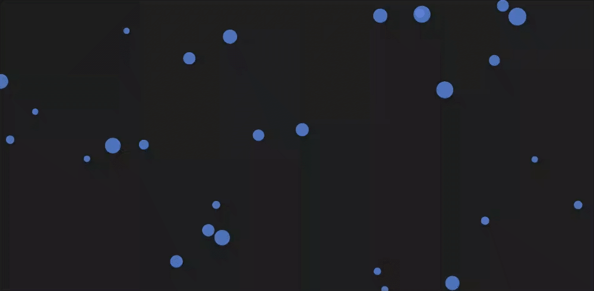
Bubble data visualisation
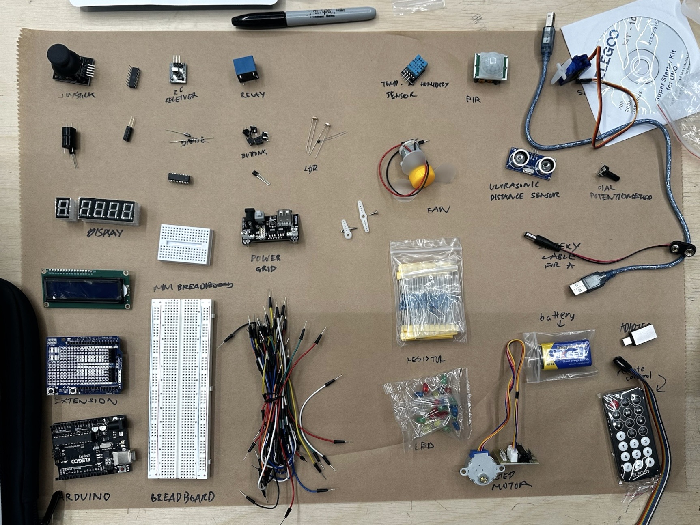
Physical Computing Components
Push to Light
Potentiometer -> Fan
Proximity Sensor → Sound
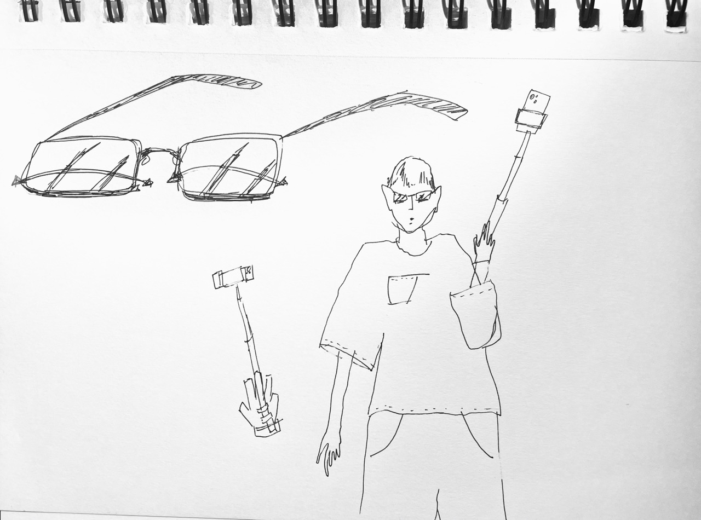
Chindogus
Vegetable Conductivity Piano
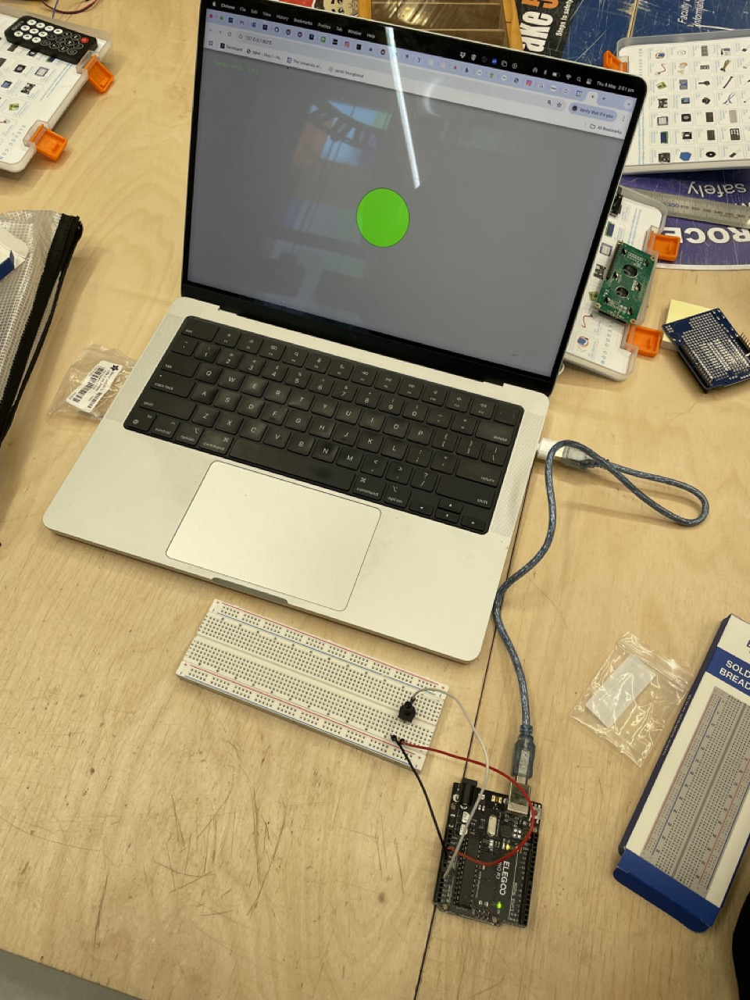
p5.js → Arduino
18+ Content
This site contains mature themes and viewer discretion is advised.
Enter